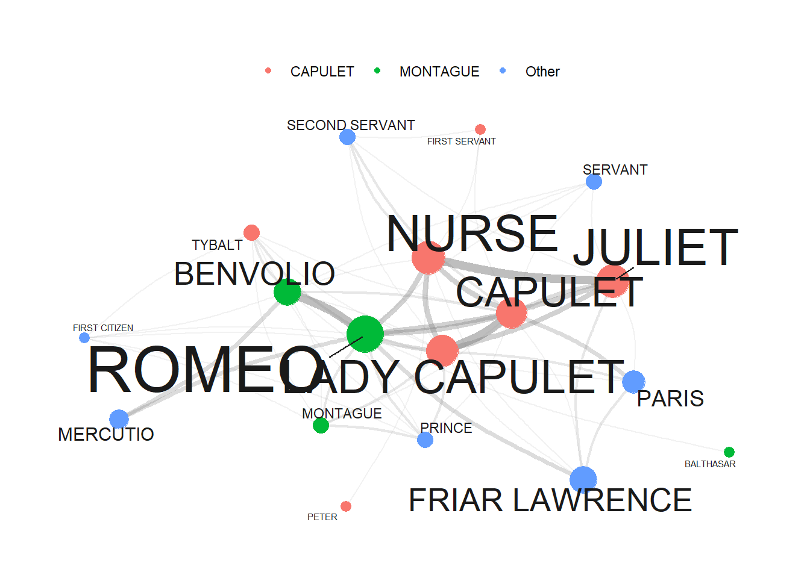

Section 10 Network Analysis
In R, there are several packages that provide essential tools for constructing, analyzing, and visualizing networks. In this section we will focus on the igraph, tidygraph, and ggraph packages. We will use these packages to generate a tidy network with is rather complex but also offers great flexibility and options for customization.
While the quantada.textplot package is much easier to use, it does not allow to extract network statistics easily.
To showcase how to prepare and generate network graphs, we will visualize the network of collocations and the characters in William Shakespeare’s Romeo and Juliet.
10.1 Data preparation
If one does not generate a network based on text data, it’s recommendable to have at least one table indicating the start and end points of edges (lines connecting nodes). Additionally, two additional tables providing information on node size/type and edge size/type are valuable. In the upcoming sections, we’ll create these tables from raw data. Alternatively, you can generate network graphs by uploading tables containing the necessary information.
We’ll generate a network showing the frequency of characters in William Shakespeare’s Romeo and Juliet appearing in the same scene. Our focus is on investigating the networks of personas in Shakespeare’s Romeo and Juliet, and thus, we’ll load this renowned work of fiction.
10.2 Creating a matrix
We start by loading the data which represents a table that contains the personas that are present during a sub-scene as well as how many contributions they make and how often they occur.
# load data
net_dat <- read.delim("https://slcladal.github.io/data/romeo_tidy.txt", sep = "\t")
# inspect data
net_dat %>%
as.data.frame() %>%
head(15)## actscene person contrib occurrences
## 1 ACT I_SCENE I BENVOLIO 24 7
## 2 ACT I_SCENE I CAPULET 2 9
## 3 ACT I_SCENE I FIRST CITIZEN 1 2
## 4 ACT I_SCENE I LADY CAPULET 1 10
## 5 ACT I_SCENE I MONTAGUE 6 3
## 6 ACT I_SCENE I PRINCE 1 3
## 7 ACT I_SCENE I ROMEO 16 14
## 8 ACT I_SCENE I TYBALT 2 3
## 9 ACT I_SCENE II BENVOLIO 5 7
## 10 ACT I_SCENE II CAPULET 3 9
## 11 ACT I_SCENE II PARIS 2 5
## 12 ACT I_SCENE II ROMEO 11 14
## 13 ACT I_SCENE II SERVANT 8 3
## 14 ACT I_SCENE III JULIET 5 11
## 15 ACT I_SCENE III LADY CAPULET 11 10We now transform that table into a co-occurrence matrix.
net_cmx <- crossprod(table(net_dat[1:2]))
diag(net_cmx) <- 0
net_df <- as.data.frame(net_cmx)
# inspect data
net_df[1:5, 1:5]%>%
as.data.frame() %>%
tibble::rownames_to_column("Persona")## Persona BALTHASAR BENVOLIO CAPULET FIRST CITIZEN FIRST SERVANT
## 1 BALTHASAR 0 0 1 0 0
## 2 BENVOLIO 0 0 3 2 1
## 3 CAPULET 1 3 0 1 2
## 4 FIRST CITIZEN 0 2 1 0 0
## 5 FIRST SERVANT 0 1 2 0 0The data shows how often a character has appeared with each other character in the play - only Friar Lawrence and Friar John were excluded because they only appear in one scene where they talk to each other.
10.3 Visualizing Networks
There are various different ways to visualize a network structure. We will focus on a method for generating networks that is extremely flexible.
First, we define the nodes and we can also add information about the nodes that we can use later on (such as frequency information).
# create a new data frame 'va' using the 'net_dat' data
net_dat %>%
# rename the 'person' column to 'node' and 'occurrences' column to 'n'
dplyr::rename(node = person,
n = occurrences) %>%
# group the data by the 'node' column
dplyr::group_by(node) %>%
# summarize the data, calculating the total occurrences ('n') for each 'node'
dplyr::summarise(n = sum(n)) -> va
# inspect
va %>%
as.data.frame() %>%
head(10)## node n
## 1 BALTHASAR 4
## 2 BENVOLIO 49
## 3 CAPULET 81
## 4 FIRST CITIZEN 4
## 5 FIRST SERVANT 4
## 6 FRIAR LAWRENCE 49
## 7 JULIET 121
## 8 LADY CAPULET 100
## 9 MERCUTIO 16
## 10 MONTAGUE 9The next part is optional but it can help highlight important information. We add a column with additional information to our nodes table.
# define family
mon <- c("ABRAM", "BALTHASAR", "BENVOLIO", "LADY MONTAGUE", "MONTAGUE", "ROMEO")
cap <- c("CAPULET", "CAPULET’S COUSIN", "FIRST SERVANT", "GREGORY", "JULIET", "LADY CAPULET", "NURSE", "PETER", "SAMPSON", "TYBALT")
oth <- c("APOTHECARY", "CHORUS", "FIRST CITIZEN", "FIRST MUSICIAN", "FIRST WATCH", "FRIAR JOHN" , "FRIAR LAWRENCE", "MERCUTIO", "PAGE", "PARIS", "PRINCE", "SECOND MUSICIAN", "SECOND SERVANT", "SECOND WATCH", "SERVANT", "THIRD MUSICIAN")
# create color vectors
va <- va %>%
dplyr::mutate(type = dplyr::case_when(node %in% mon ~ "MONTAGUE",
node %in% cap ~ "CAPULET",
TRUE ~ "Other"))
# inspect updates nodes table
head(va, 10)## # A tibble: 10 × 3
## node n type
## <chr> <int> <chr>
## 1 BALTHASAR 4 MONTAGUE
## 2 BENVOLIO 49 MONTAGUE
## 3 CAPULET 81 CAPULET
## 4 FIRST CITIZEN 4 Other
## 5 FIRST SERVANT 4 CAPULET
## 6 FRIAR LAWRENCE 49 Other
## 7 JULIET 121 CAPULET
## 8 LADY CAPULET 100 CAPULET
## 9 MERCUTIO 16 Other
## 10 MONTAGUE 9 MONTAGUENow, we define the edges, i.e., the connections between nodes and, again, we can add information in separate variables that we can use later on.
# create a new data frame 'ed' using the 'dat' data
ed <- net_df %>%
# add a new column 'from' with row names
dplyr::mutate(from = rownames(.)) %>%
# reshape the data from wide to long format using 'gather'
tidyr::gather(to, n, BALTHASAR:TYBALT) %>%
# remove zero frequencies
dplyr::filter(n != 0)
# inspect
ed %>%
as.data.frame() %>%
head(10) ## from to n
## 1 CAPULET BALTHASAR 1
## 2 FRIAR LAWRENCE BALTHASAR 1
## 3 JULIET BALTHASAR 1
## 4 LADY CAPULET BALTHASAR 1
## 5 MONTAGUE BALTHASAR 1
## 6 PARIS BALTHASAR 1
## 7 PRINCE BALTHASAR 1
## 8 ROMEO BALTHASAR 2
## 9 CAPULET BENVOLIO 3
## 10 FIRST CITIZEN BENVOLIO 2Now that we have generated tables for the edges and the nodes, we can generate a graph object.
We will also add labels to the nodes as follows:
When we now plot our network, it looks as shown below.
# set seed (so that the exact same network graph is created every time)
set.seed(12345)
# create a graph using the 'tg' data frame with the Fruchterman-Reingold layout
tg %>%
ggraph::ggraph(layout = "fr") +
# add arcs for edges with various aesthetics
geom_edge_arc(colour = "gray50",
lineend = "round",
strength = .1,
aes(edge_width = ed$n,
alpha = ed$n)) +
# add points for nodes with size based on log-transformed 'v.size' and color based on 'va$Family'
geom_node_point(size = log(va$n) * 2,
aes(color = va$type)) +
# add text labels for nodes with various aesthetics
geom_node_text(aes(label = name),
repel = TRUE,
point.padding = unit(0.2, "lines"),
size = sqrt(va$n),
colour = "gray10") +
# adjust edge width and alpha scales
scale_edge_width(range = c(0, 2.5)) +
scale_edge_alpha(range = c(0, .3)) +
# set graph background color to white
theme_graph(background = "white") +
# adjust legend position to the top
theme(legend.position = "top",
# suppress legend title
legend.title = element_blank()) +
# remove edge width and alpha guides from the legend
guides(edge_width = FALSE,
edge_alpha = FALSE)
10.4 Network Statistics
In addition to visualizing networks, we will analyze the network and extract certain statistics about the network that tell us about structural properties of networks.
To extract the statistics, we use the edge object generated above (called ed) and then repeat each combination as often as it occurred based on the value in the Frequency column.
dg <- ed[rep(seq_along(ed$n), ed$n), 1:2]
rownames(dg) <- NULL
# inspect data
dg %>%
as.data.frame() %>%
head(10)## from to
## 1 CAPULET BALTHASAR
## 2 FRIAR LAWRENCE BALTHASAR
## 3 JULIET BALTHASAR
## 4 LADY CAPULET BALTHASAR
## 5 MONTAGUE BALTHASAR
## 6 PARIS BALTHASAR
## 7 PRINCE BALTHASAR
## 8 ROMEO BALTHASAR
## 9 ROMEO BALTHASAR
## 10 CAPULET BENVOLIO10.4.1 Degree centrality
We now generate an edge list from the dg object and then extract the degree centrality. The degree centrality reflects how many edges each node has with the most central node having the highest value.
dgg <- graph.edgelist(as.matrix(dg), directed = T)
# extract degree centrality
igraph::degree(dgg) %>%
as.data.frame() %>%
tibble::rownames_to_column("node") %>%
dplyr::rename(`degree centrality` = 2) %>%
dplyr::arrange(-`degree centrality`) -> dc_tbl
# inspect data
dc_tbl %>%
as.data.frame() %>%
head(10) ## node degree centrality
## 1 ROMEO 108
## 2 CAPULET 92
## 3 LADY CAPULET 90
## 4 NURSE 76
## 5 JULIET 72
## 6 BENVOLIO 68
## 7 MONTAGUE 44
## 8 PRINCE 44
## 9 TYBALT 44
## 10 PARIS 4210.4.3 Betweenness centrality
We now extract the betweenness centrality. Betweenness centrality provides a measure of how important nodes are for information flow between nodes in a network. The node with the highest betweenness centrality creates the shortest paths in the network. The higher a node’s betweenness centrality, the more important it is for the efficient flow of goods in a network.
igraph::betweenness(dgg) %>%
as.data.frame() %>%
tibble::rownames_to_column("node") %>%
dplyr::rename(`betweenness centrality` = 2) %>%
dplyr::arrange(-`betweenness centrality`) -> bc_tbl
# inspect data
bc_tbl %>%
as.data.frame() %>%
head(10)## node betweenness centrality
## 1 ROMEO 27.624370
## 2 LADY CAPULET 16.276864
## 3 CAPULET 15.623219
## 4 BENVOLIO 9.615121
## 5 NURSE 7.401454
## 6 JULIET 5.554710
## 7 TYBALT 3.199408
## 8 MONTAGUE 2.182203
## 9 PRINCE 2.182203
## 10 PARIS 1.85942910.4.4 Closeness
In addition, we extract the closeness statistic of all edges in the dg object by using the closeness function from the igraph package. Closeness centrality refers to the shortest paths between nodes. The distance between two nodes represents the length of the shortest path between them. The closeness of a node is the average distance from that node to all other nodes.
igraph::closeness(dgg) %>%
as.data.frame() %>%
tibble::rownames_to_column("node") %>%
dplyr::rename(closeness = 2) %>%
dplyr::arrange(-closeness) -> c_tbl
# inspect data
c_tbl %>%
as.data.frame() %>%
head(10)## node closeness
## 1 LADY CAPULET 0.05882353
## 2 ROMEO 0.05882353
## 3 CAPULET 0.05555556
## 4 BENVOLIO 0.05263158
## 5 JULIET 0.05000000
## 6 NURSE 0.04761905
## 7 TYBALT 0.04761905
## 8 MONTAGUE 0.04545455
## 9 PARIS 0.04545455
## 10 PRINCE 0.04545455